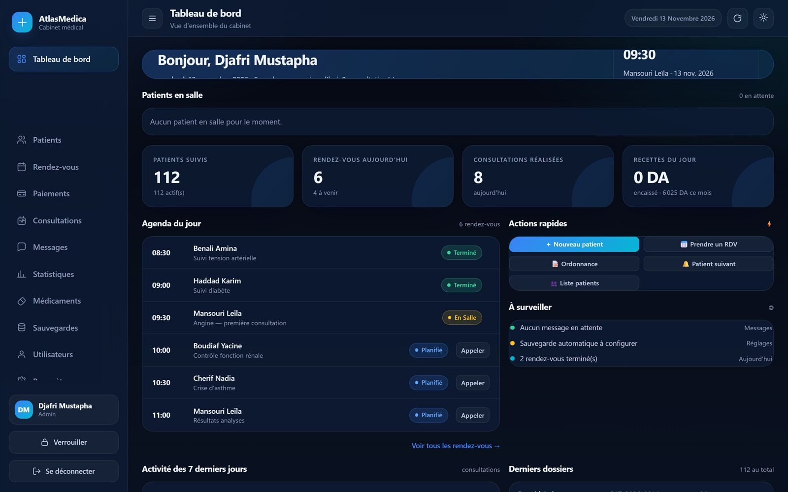
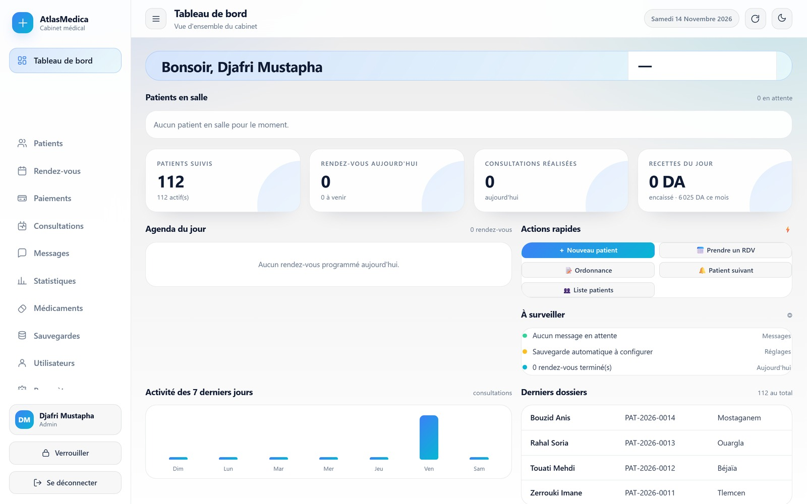
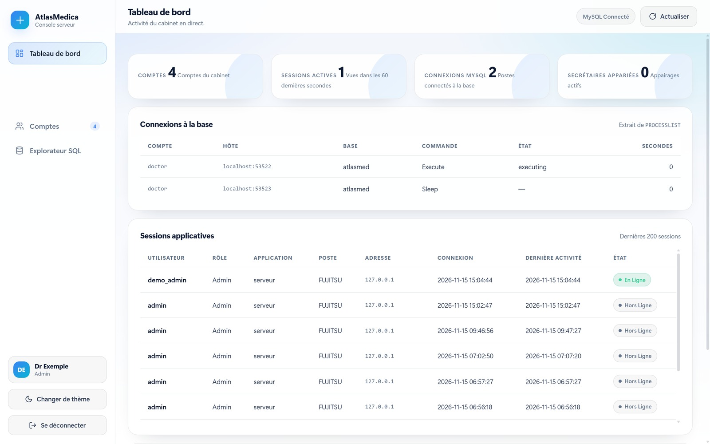
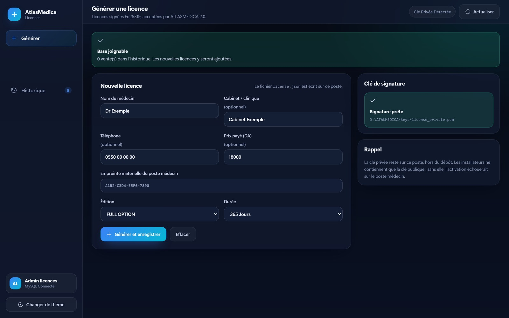

Dossier patient
Antécédents, allergies, traitements en cours, constantes et QR code patient. Une synthèse claire à chaque ouverture.
Dossier patient, rendez-vous, consultation, ordonnance. ATLASMEDICA réunit tout le quotidien du cabinet dans une interface calme, pensée pour le médecin comme pour le secrétariat.

Huit écrans réels, sans maquette : voilà le parcours d'une consultation dans ATLASMEDICA 2.0.
Chaque écran provient de l'application réelle, version 2.0. Voir la présentation animée ↗
La lumière du cabinet change au fil de la journée. ATLASMEDICA propose un thème sombre et un thème clair, sans perdre la palette choisie ni la disposition des écrans.

Des modules qui suivent le flux réel d'une journée de consultation, du premier rendez-vous au compte rendu.
Antécédents, allergies, traitements en cours, constantes et QR code patient. Une synthèse claire à chaque ouverture.
Agenda du jour, statuts, appel du patient et file d'attente. Le secrétariat et le médecin travaillent sur le même planning.
Motif, symptômes, examen, diagnostic, constantes et scores cliniques. Tout est enregistré au même endroit, sans double saisie.
Référentiel médicaments, DCI, posologie et durée. Impression directe ou PDF, avec ou sans en-tête du cabinet.
Certificats médicaux, demandes, exploitations et modèles. Les documents se génèrent depuis le dossier, sans ressaisie.
Honoraires, règlements, impayés et rapports d'activité. Les chiffres du mois se mettent à jour au fil des consultations.
Un canal simple entre le médecin et le secrétariat pour les appels, les urgences et les consignes du jour.
Vos données restent chez vous. Sauvegarde et restauration en un clic, historique conservé sur le poste serveur.
Français, arabe et anglais. 18 palettes prédéfinies et 10 couleurs personnalisées pour adapter l'interface à votre cabinet.
Le dossier s'ouvre avec le patient déjà sélectionné. Vous saisissez le motif, l'examen et le diagnostic ; les antécédents, les constantes et les scores restent à portée de main.
Le référentiel médicament propose la forme, la posologie et la durée. L'ordonnance se remplit au fil de la consultation, puis s'imprime ou s'exporte en PDF.
La fiche synthétique rassemble l'essentiel : antécédents, médicaments en cours, dernières constantes et dernière consultation. Plus besoin de parcourir des onglets pour retrouver une information.
Une refonte de l'expérience, pas seulement des couleurs : l'interface a été repensée pour tenir sur tous les écrans et réduire les gestes inutiles.
Moins de bruit visuel, plus d'espace, une hiérarchie claire entre le dossier, le rendez-vous et la consultation.
L'application s'ajuste à la résolution et à la mise à l'échelle de Windows, sans jamais dépasser le bas de l'écran.
Le menu se replie en un rail d'icônes et réapparaît au survol. Plus d'espace pour les tableaux et les formulaires.
Le bleu Atlas devient la palette de référence. Chaque cabinet peut composer la sienne et la retrouver au prochain lancement.
Un binaire dédié au secrétariat : patients, rendez-vous, paiements et messagerie, avec les bons droits dès l'ouverture.
Les traitements en cours et la posologie sont repris automatiquement, pour une ordonnance prête en deux clics.
Le médecin et le secrétariat partagent les mêmes données, chacun avec l'interface et les droits qui lui correspondent.
Le poste de consultation complet.
L'accueil et le planning, sans surcharge.
Derrière les postes de consultation, deux outils discrets veillent sur les comptes et les licences du cabinet.
Le poste qui héberge la base du cabinet.

L'émission des licences, signées et traçables.

Sans engagement. L'essai de 7 jours ouvre toutes les fonctionnalités.
L'essentiel pour démarrer
Pour le cabinet avec équipe
Pour la clinique
Achat unique, sans abonnement
Clé en main sur mesure
Toutes les fonctionnalités FULL OPTION, sans engagement et sans carte bancaire.
Sur votre propre poste serveur. Vous gardez le contrôle total et pouvez sauvegarder ou restaurer en un clic, sans dépendre d'un service extérieur.
Oui, 7 jours gratuits avec toutes les fonctionnalités FULL OPTION, sans carte bancaire. Vos données sont conservées si vous souscrivez.
Les deux partagent les mêmes données. L'édition Médecin ouvre la consultation, les ordonnances et les statistiques ; l'édition Secrétaire se concentre sur l'accueil, les rendez-vous et les paiements.
Oui. La fenêtre se dimensionne sur la zone utile de l'écran et tient compte de la mise à l'échelle de Windows. La version 2.0 corrige les débordements sur les écrans 1366×768 et 1024×768.
Non. C'est une aide à la réflexion clinique : elle propose un diagnostic différentiel argumenté, signale les red flags et rappelle qu'elle ne remplace pas le praticien.
Non. Ils ouvrent simplement le lien de la salle dans leur navigateur.
Dites-nous votre structure : nous vous proposons l'offre adaptée et une démonstration personnalisée de la version 2.0.